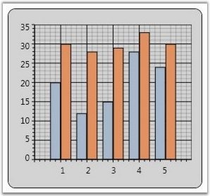

The following are the three steps that should be followed:
· Adding Chart Series
· Data Binding
· Sorting the Series Data
Adding Chart Series
You can add one or more Chart Series to a Chart Area to plot points in the Chart. Note that you can specify one of the several built-in Chart types for rendering the series points.
|
[XAML]
<sfchart:Chart> <sfchart:ChartArea> <sfchart:ChartSeries/> </sfchart:ChartArea> </sfchart:Chart> |
|
[C#]
ChartSeries series = new ChartSeries(); Chart1.Areas[0].Series.Add(series); |
You can then add points to the series using one of the following Data Binding techniques.
Data Binding
The most common and convenient approach to populate a Chart Series is by simply binding the Chart Series to a business object list. The following properties are used for this purpose.
Table 12: Property Table
|
Property |
Description |
|
DataSource |
takes any IEnumerable instance as the Data Source |
|
BindingPathX |
specifies the member / field in the specified data source that contains the x values for the series |
|
BindingPathsY |
specifies the members / fields in the specified data source that contain the y values for the series
Note that some Chart Types require more than one y value and hence this property is of type String Array. |
All the common data sources are supported by the Chart control. The following are some of the data sources supported.
· IList instances
· ObservableCollection
· XmlDataProvider
· CollectionViewSource
· LINQ results
· Other compatible data sources
Note that the chart plot will automatically update when the bound data sends a change notification.
The following code example illustrates how to bind the Chart control to an XMLDataProvider.
|
[XAML]
<Window.Resources> <XmlDataProvider x:Key="myXmlData"> <x:XData> <Products xmlns=""> <Product Sales="20" Projected="30" Month="1"/> <Product Sales="12" Projected="28" Month="2"/> <Product Sales="15" Projected="29" Month="3"/> <Product Sales="28" Projected="33" Month="4"/> <Product Sales="24" Projected="30" Month="5"/> </Products> </x:XData> </XmlDataProvider> </Window.Resources>
<Grid> <sfchart:Chart Name="Chart2"> <sfchart:ChartArea > <sfchart:ChartSeries DataSource="{Binding Source={StaticResource myXmlData}, XPath=Products/Product}" BindingPathX="Month" BindingPathsY="Sales" Type="Column" Label="Actual Sales"> </sfchart:ChartSeries> <sfchart:ChartSeries DataSource="{Binding Source={StaticResource myXmlData}, XPath=Products/Product}" BindingPathX="Month" BindingPathsY="Projected" Type="Column" Label="Projected Sales"> </sfchart:ChartSeries> </sfchart:ChartArea> </sfchart:Chart> </Grid> |

Figure 80: Sample Chart bound to XMLDataProvider
Sorting the Series Data
The data can either be sorted or unsorted. If you are sure that the data passed to the collection is sorted, then you can turn off the sorting feature by using the following code.
|
[C#]
Series.IsSortData = false; |
See Also
Creating a Chart, Data Binding, Series Customization